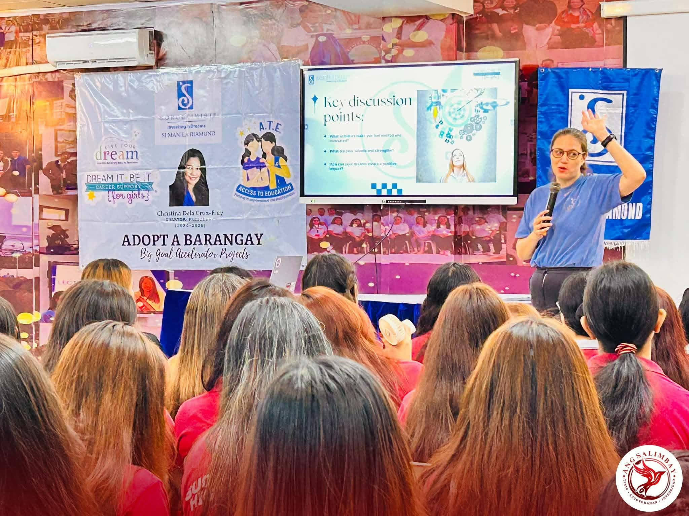

Opisyal na Publikasyon ng Sucat Senior High School
TINGNAN | Ang Salimbay | Hunyo 25, 2026

Mga mag-aaral ng Sucat Senior High School na dumalo sa Career Support Program ng Soroptimist International Manila Diamond – Dream It, Be It.
Nagkaroon ng Career Support Program para sa mga mag-aaral ng Sucat Senior High School (SSHS) sa pangunguna ng Soroptimist International Manila Diamond (SIMD) – Dream It, Be It (DIBI) Organization ngayong Hunyo 25, 2026.
Pinangunahan ng panauhing tagapagsalita na si Bb. Christine Codrington, kasalukuyang pangulo ng SIMD at tagapangulo ng DIBI Organization, ang pagtalakay sa mga hakbang na makatutulong sa mga mag-aaral sa pagpaplano ng kanilang karera sa hinaharap.
Binigyang-diin din niya ang kahalagahan ng pagpaplano gamit ang SMART o Specific, Measurable, Attainable, Relevant, at Timely upang maging gabay sa pagbuo ng mga mithiin at layunin.
Sumunod namang nagbahagi ng payo si G. Kinwood Galiza, trainer ng CPDC Training and Testing Corp., tungkol sa mga dapat gawin ng mga estudyanteng nakararanas ng suliranin sa pag-aaral.
Ayon sa kaniya, ang bawat balakid, paghihirap, at pagkatalo ay hindi dahilan upang sumuko; bagkus, dapat itong gawing inspirasyon upang patuloy na magsikap at makamit ang tagumpay.
Dumalo rin si Bb. Christina Dela Cruz-Frey, charter president ng SIMD para sa taong 2024–2026. Ibinahagi niya ang kaniyang karanasan sa buhay at kung paano siya nagtagumpay sa murang edad. Nagsilbi itong inspirasyon sa mga mag-aaral na dumalo sa programa.
Samantala, binanggit din ang Scholarship Program ng SIMD na bukas para sa mga mag-aaral ng SSHS na nangangailangan ng tulong pinansyal upang maipagpatuloy ang kanilang pag-aaral.
Bago tuluyang matapos ang programa, namahagi ang DIBI Organization ng aklat na tumatalakay sa buhay ni Dioceldo Sy, na kilala bilang “Father of Philippine Cosmetics.”
Ang aklat ay may pamagat na Dioceldo’s Big Dream at inaasahang magsisilbing inspirasyon sa mga mag-aaral na magbabasa nito.
Nagtapos ang palatuntunan sa pamamahagi ng sertipiko ng pagkilala para sa butihing punong-guro ng SSHS na si Dr. Jay Boy Evano at sa Assistant to the School Principal for Learner Support na si G. Jorge T. Endozo.
Sa pamamagitan ng mga programang tulad nito, mas nabibigyan ng pagkakataon ang mga mag-aaral na mangarap, magplano, at ihanda ang sarili para sa kinabukasang nais nilang tahakin.